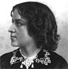

Alison Booth
Parton, James, et al. Eminent Women of the Age: Being Narratives of the Lives and Deeds of the Most [/More] Prominent Women of the Present Generation. By James Parton, Horace Greeley, T. W. Higginson, J. S. C. Abbott, Professor James M. Hoppin, William Winter, Theodore Tilton, Fanny Fern, Grace Greenwood, Mrs. E. C. Stanton, etc. Richly Illustrated with Fourteen Steel Engravings. Hartford, CT: Betts, 1868; 1869; 1871; 1872; 1873; 1877; 1879; 1888; Park, 1880. Chicago: Gibbs & Nichols, 1869.
TOC: Florence Nightingale; Lydia Maria Child; Fanny Fern, Mrs. Parton; Lydia H. Sigourney; Mrs. Frances Anne Kemble; Eugenie, Empress of the French; Grace Greenwood, Mrs. Lippincott; Alice and Phebe Cary; Margaret Fuller Ossoli; Gail Hamilton, Miss Dodge; Elizabeth Barrett Browning; Jenny Lind Goldschmidt; Mrs. Emma Willard; Mrs. Marianne P. Dascomb; Harriet Beecher Stowe; Mrs. Elizabeth Cady Stanton; Sarah and Angelina Grimke; Abby Kelley; Mary Grew; Anne Greene Phillips; Lucretia Mott; Caroline M. Severance; Frances D. Gage; Abby Hutchinson; Antoinette Brown; Lucy Stone; Mrs. Caroline H. Dall; Mrs. C. I. H. Nichols; Susan B. Anthony; Olympia Brown; Victoria, Queen of England; Adelaide Ristori; Euphrosyne Parepa Rosa; Ellen Tree, Mrs. Charles Kean; Clara Louisa Kellogg; Kate Bateman, Mrs. George Crowe; Helen Faucit, Mrs. Theordore Martin; Anna Elizabeth Dickinson; Mrs. Clemence S. Lozier, M.D.; Miss Elizabeth Blackwell, M.D.; Miss Harriot K. Hunt, M.D.; Mrs. Hannah E. Longshore, M.D.; Miss Ann Preston, M.D.; Camilla Urso; Harriet G. Hosmer; Rosa Bonheur; Mrs. Julia Ward Howe.
In spite of similar title, this earlier, multi-authored anthology of different biographical clusters of living or recent subjects overlaps with some of Parton's later compilations, but they are not simply reissues. Bound with John S. Jenkins, Heroines of History , 2 vol. in 1, Hartford: Park, 1880.
-
Rosa Bonheur
-
 Florence Nightingale
Florence Nightingale -
Lydia H. Sigourney
-
 Eugenie, Empress of the French
Eugenie, Empress of the French -
Margaret Fuller Ossoli
-
Elizabeth Barrett Browning
-
Mrs. Emma Willard
-
 Mrs. Elizabeth Cady Stanton
Mrs. Elizabeth Cady Stanton -
 Lucretia Mott
Lucretia Mott -
 Victoria, Queen of England
Victoria, Queen of England -
Adelaide Ristori
-
Anna E. Dickinson
-
 Mrs. C. S. Lozier, M.D.
Mrs. C. S. Lozier, M.D. -
 Harriet Hosmer
Harriet Hosmer
Search OCLC WorldCat for this title.
Search Google Books for this title.